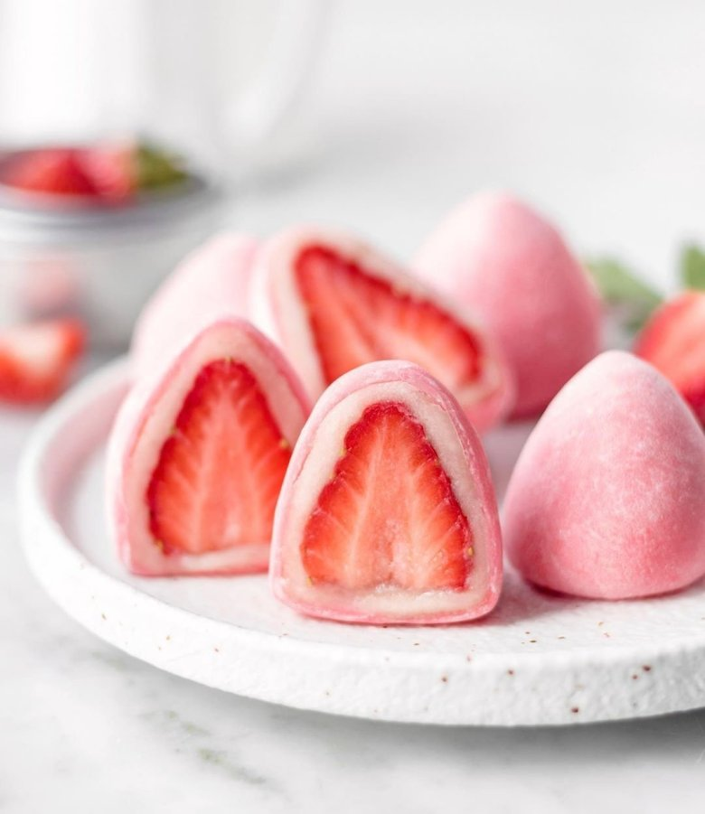

Рецепт моти с клубникой

Ингредиенты
- клейкая рисовая мука 100г
- сахарная пудра 50г
- вода 150г
- кукурузный крахмал 1 ст ложка
- пищевой краситель(красный)
Начинка
- маскрапоне 150г
- сливки 33% 50г
- сахарная пудра 30г
- клубника 7 шт
Способ приготовления:
- Смешать муку,крахмал и сахарную пудру.
- Добавить холодную воду,каплю пищевого красителя и перемешиваем до растворения комочков.
- Накрываем ёмкость пищевой плёнкой,делаем отверстия зубочисткой и отправляем в микроволновую печь на 1 минуту
- затем перемешиваем и отправляем в микроволновую печь на 1.5мин
(Тесто должно получиться липким и густым)
Готовим крем:
- взбиваем холодные сливки сыр и пудру до однородности
- Присыпаем селиконовый коврик крахмалом и сахарной пудрой и вмешиваем в тесто.Делим его на восемь частей и раскатываем лепёшку.(!Важно раскатать тесто тонко)В центр отсаживаем крем и кладём половинку клубники.Защипываем края,засыпаем пудрой и крахмалом.